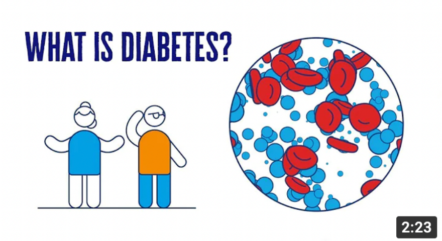
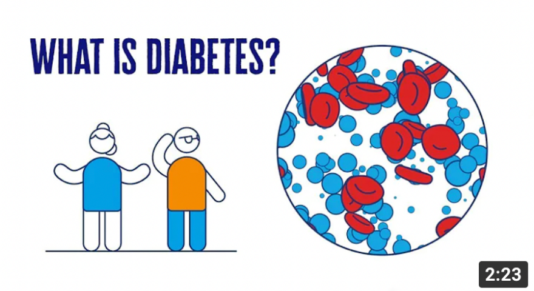

Type 1 Diabetes
Type 1 diabetes occurs when the pancreas is unable to make the hormone insulin. Insulin acts like a key to
open cells and let glucose enter from the blood.The glucose comes from the food we eat and gives us energy.
Type 2 Diabetes
Type 2 diabetes is a condition where the beta cells in the pancreas still make insulin, but it may not make
enough, or the insulin that is being made does not do its job properly. As a result, the gates of
the cells cannot open to let the glucose in.
Pre-diabetes
Nearly one in four adults over the age of 25 years has either diabetes or a condition known as
‘pre-diabetes’. This is when blood glucose levels are higher than normal but not high enough to
be diagnosed with type 2 diabetes.
More Information
To learn more about diabetes, you can visit this website:
www.diabetesvic.org.au
www.diabetesvic.org.au
What is diabetes?
 
